Latest Updates
Competition results, publications, events, awards, and announcements from 2016 to present.
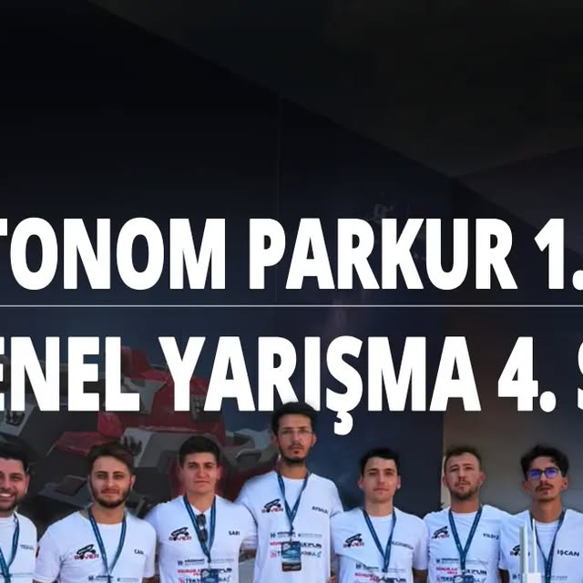
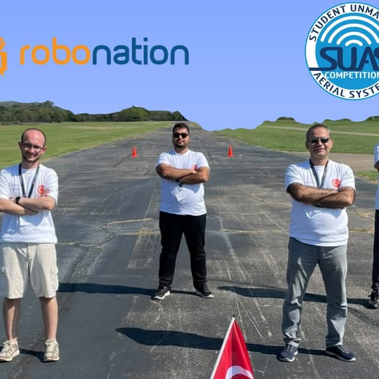
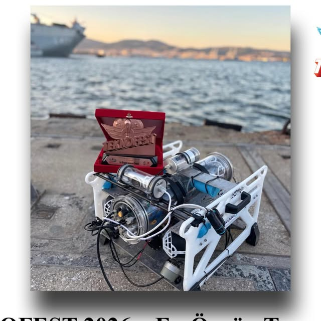
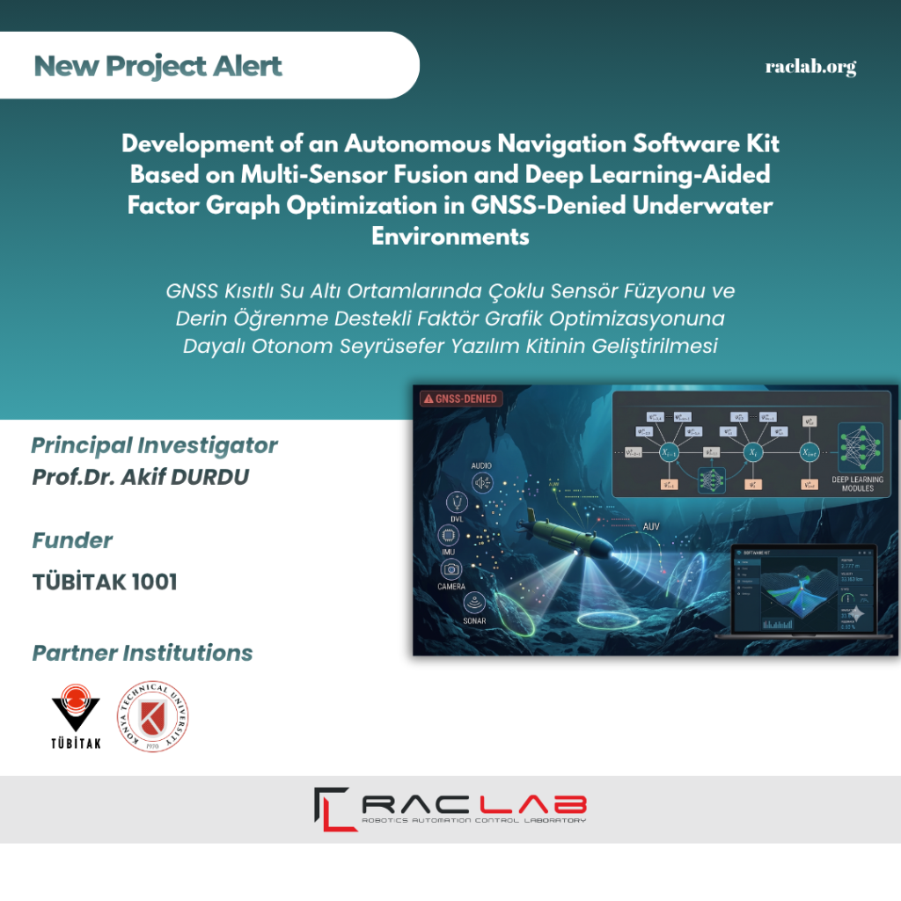
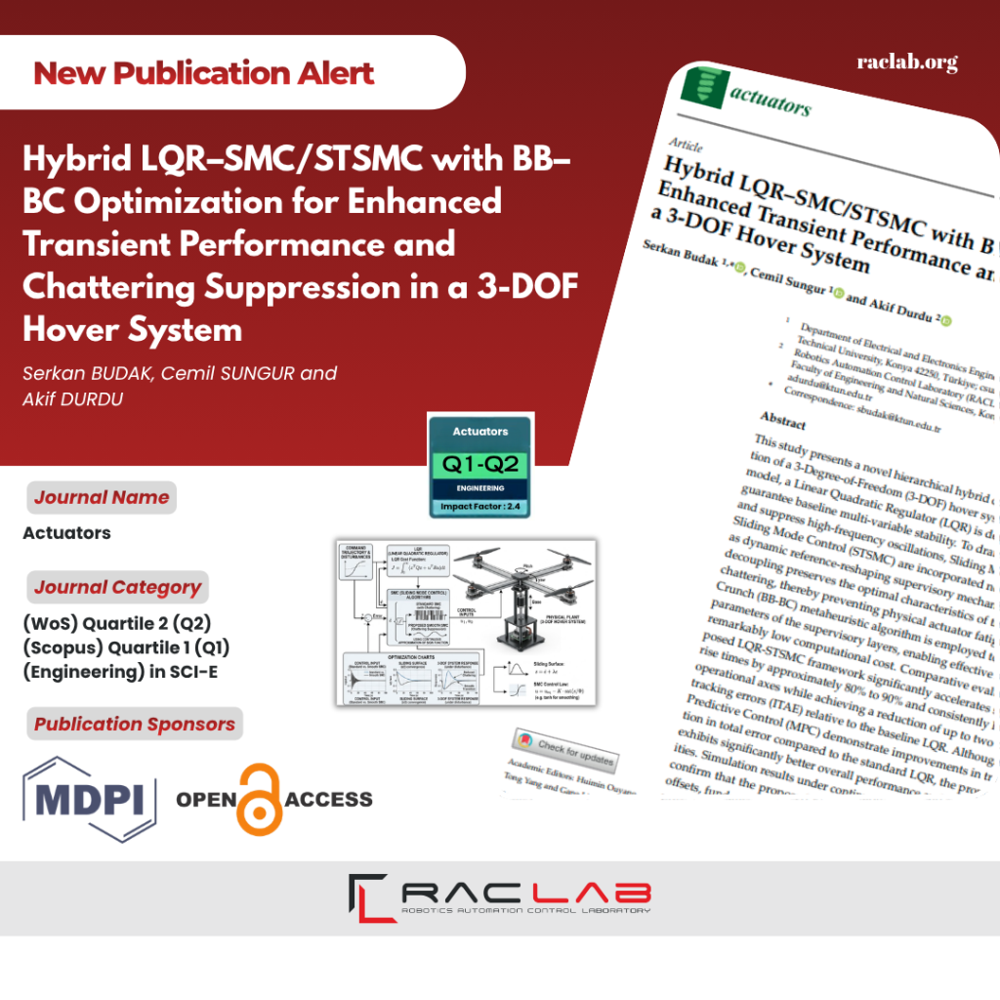
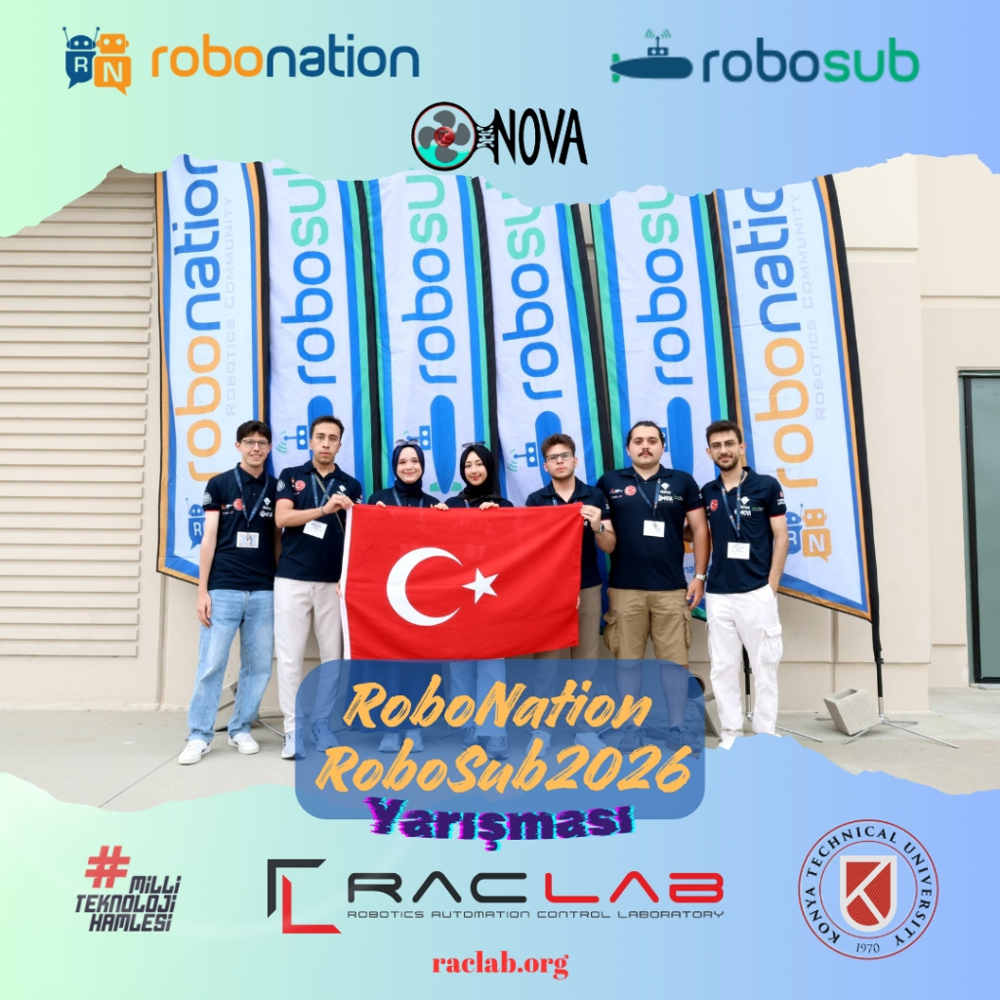
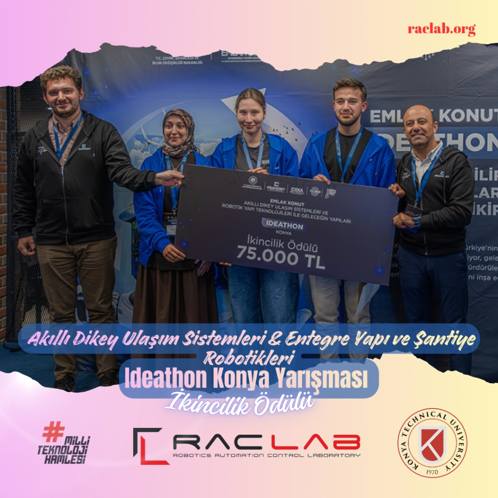
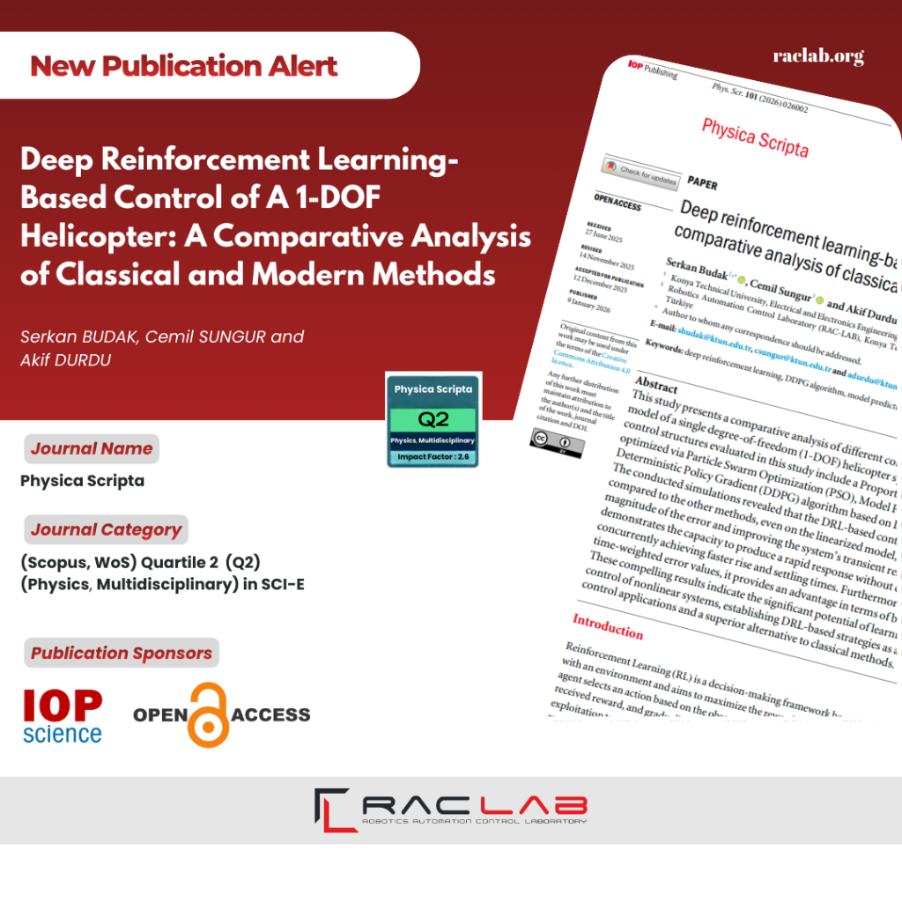
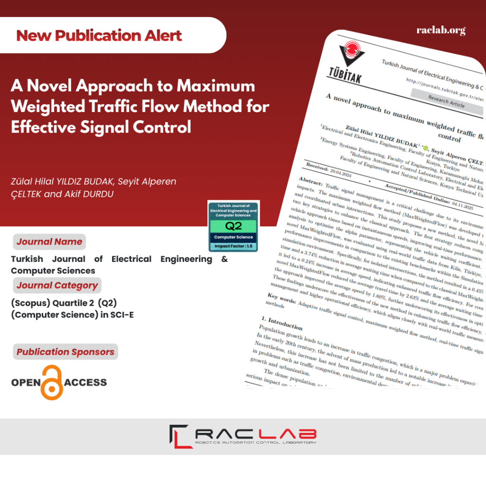
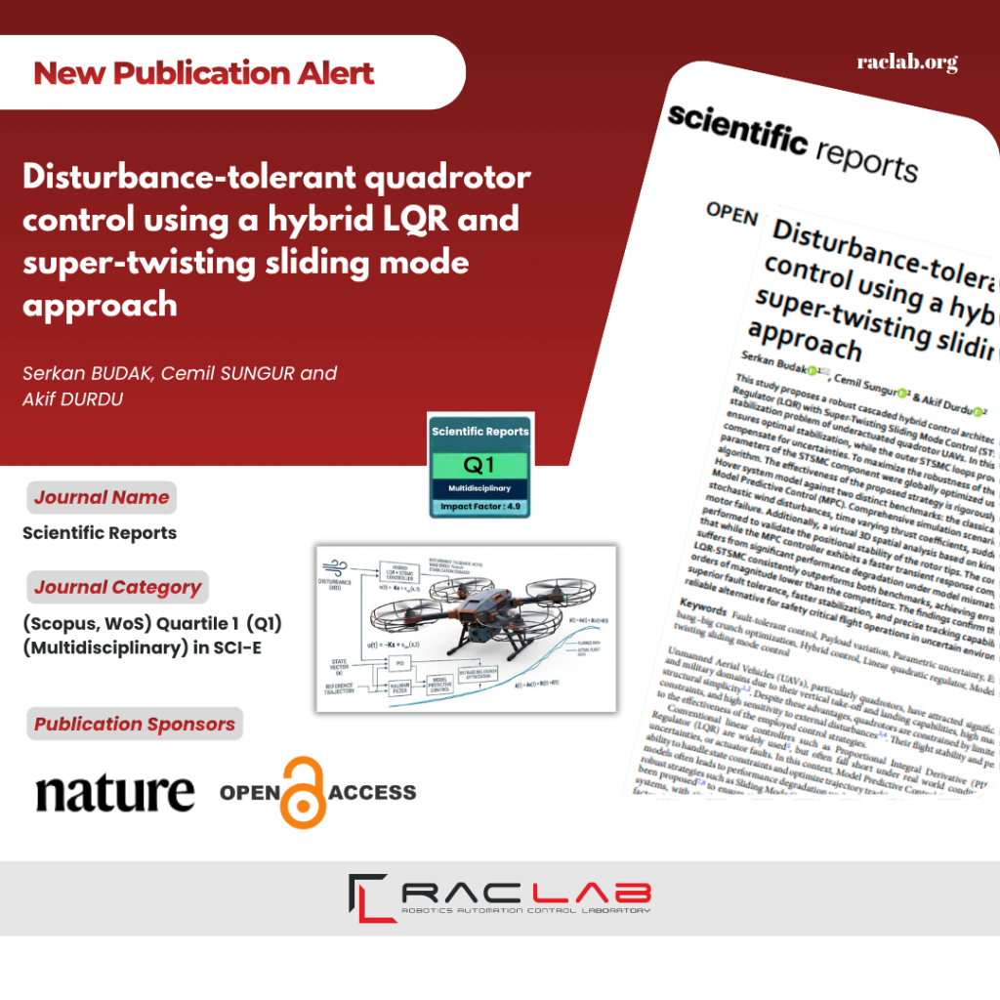
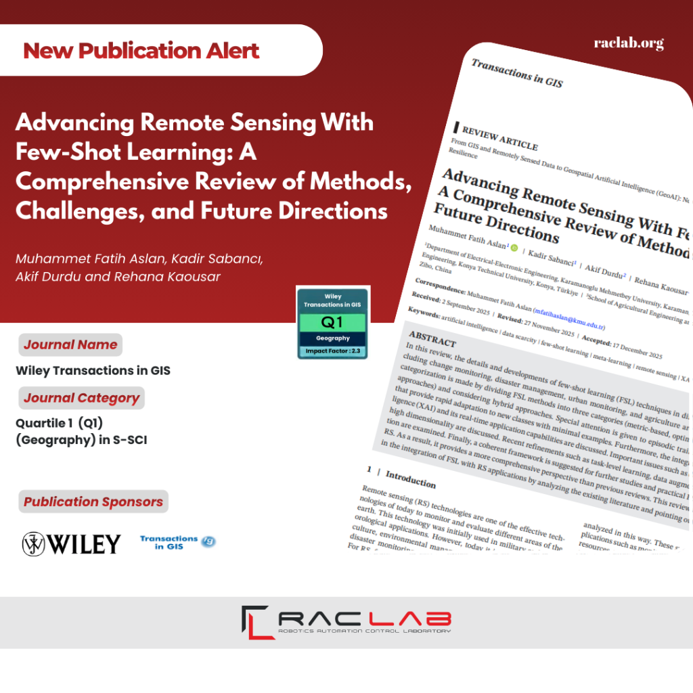
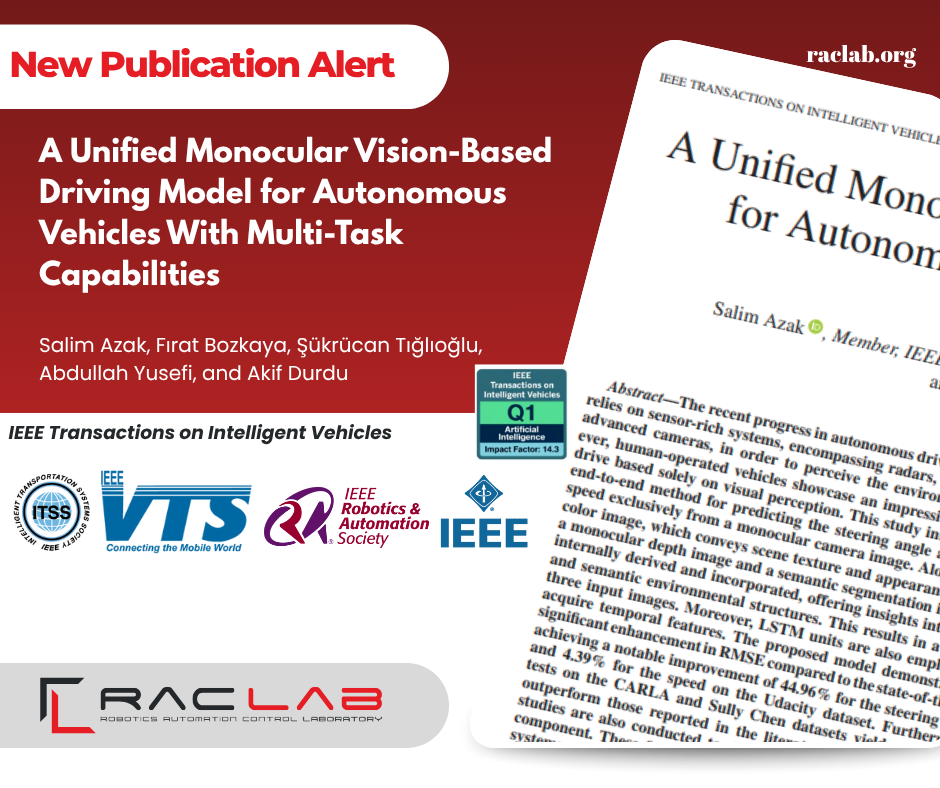
📭
No news found for the selected filters.
Follow RACLAB on social media for real-time updates, behind-the-scenes content, and competition live coverage.